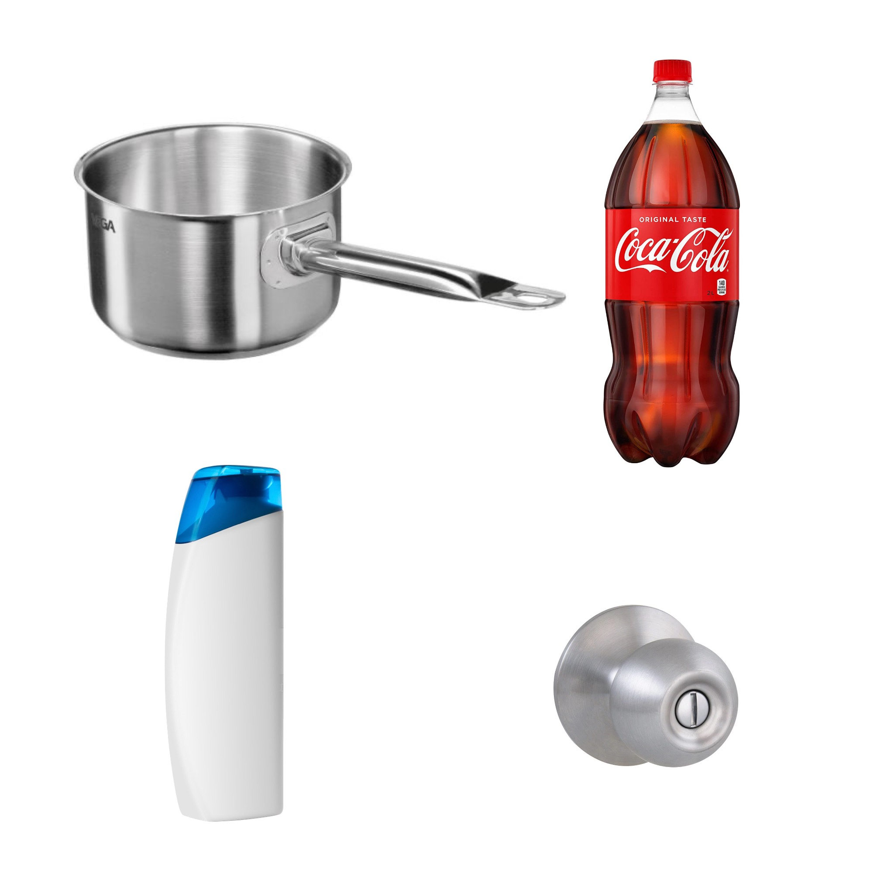
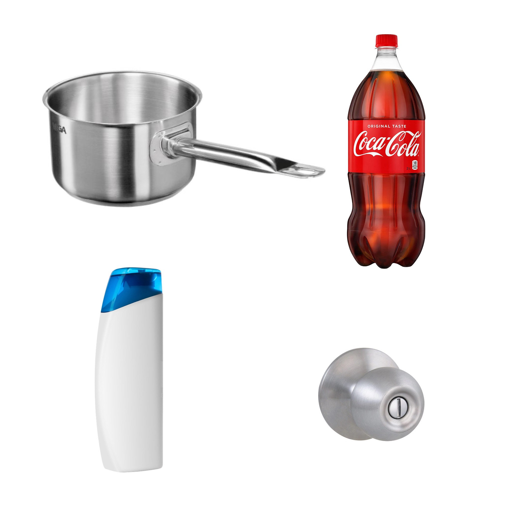
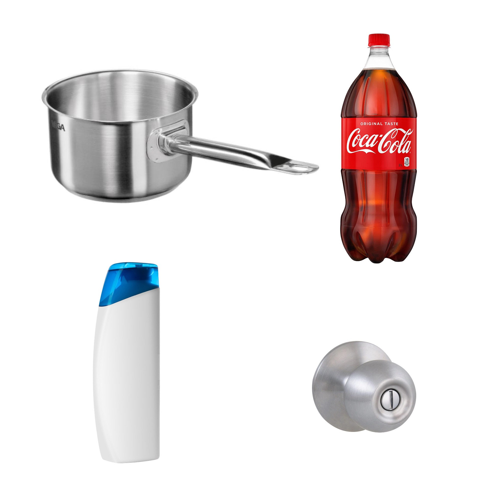

This experiment is designed to help those of us who do not understand what it is like to have a physical diffculty to recreate
and experience what it is like to have a difficulty.
In this experiment we will concetrate on finger dexterity.
The goal is to help us to understand how hard it can be for people with limited
capability and chronic pain to do everyday things.

Gather these items.
1. 10 coins.
2. Clear adhesive tape.
3. Saucepan, screw top bottle, shampoo bottle, access to a doorknob.
Instructions on how to set up the experiment.
1. On each of the knuckles of your hands tape a coin onto the outside of your knuckle.
2. Make sure it is secure.
3. Watch the video for reference of how it should look when completed.
What to do next
Here are some basic things you can try with your new found disability. Use the items you have gathered to experience the every day life of those who are differently abled. Try other simple tasks and everyday chores to expand your empathy.
1. Pick up the saucepan and fill it with water.
2. Open a door.
3. Open the drink bottle.
4. Run water over the shampoo bottle and then try to grip and open it.
Talk about your experiences and share your thoughts, as innovators this is a great chance to explore ideas on how we might solves issues around dexterity challenges!

 
